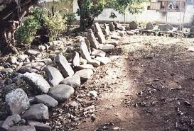

Balairung ini sering dimanfaatkan untuk kegiatan musyawarah. Dalam musyawarah para penghulu kelarasan Bodi Caniago, dikenal filosofi “duduak samo randah, tagak samo tinggi”. Tidak adanya anjung pada balairung ini berarti tidak ada tempat yang lebih tinggi, yang biasa diperuntukkan bagi raja ataupun penghulu pucuk. Sistem adat Bodi Caniago tidak mengenal adanya penghulu pucuk (ketua penghulu atau penghulu yang paling tua).
U
S
T
B
TL
BL
TG
BD
Denah: 18 m (barat — timur) × 9 m (selatan — utara). Batas talud bergaris di dalam bingkai.
Kurisi Salapan
Peti Batu
B1
Tahta Batu Utara
B2
Tahta Batu Selatan
K
Batu Besar
Petunjuk singkat
• Letakkan 2 tahta batu di utara dan 5 tahta batu di selatan, dengan jarak masing-masing sejauh ≈ 3 m, kecuali tahta batu utara.
• Semua di bidang 18 × 9 m (lihat batas talud pada denah).
• Batu besar berada di paling timur laut, dengan jarak 12 meter dengan tahta batu paling barat laut.
Medan nan Bapaneh
Medan nan bapaneh juga merupakan balai batu yang terdiri dari tatanan beberapa tahta batu yang disusun membentuk denah segi empat. Tahta batu tersebut berupa pasangan dari sebuah batu yang diletakkan mendatar di bagian depan serta sebuah batu lain yang ditegakkan di bagian belakangnya sehingga menyerupai alas dan sandaran kursi.

Nilai-Nilai Demokrasi Minangkabau
Pasangkan istilah berikut dengan maknanya yang tepat.
Saiyo sakato
Sahino samalu
Anggo tanggo
Sapikue Sajinjiang
Kehidupan kelompok sesuku sangat erat...
Tugas menjadi tanggung jawab bersama...
Perbedaan pendapat diakui; diselesaikan lewat musyawarah...
Pergaulan tertib dan disiplin; anggota wajib mematuhi aturan...